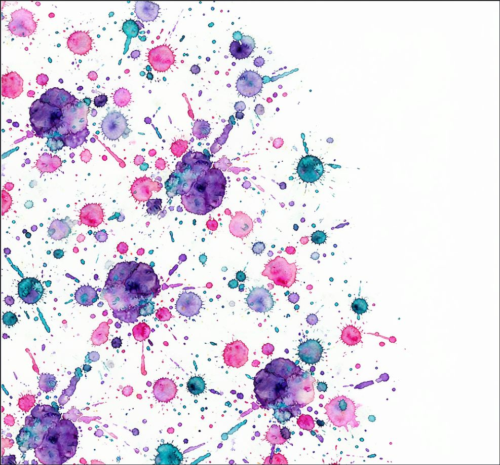
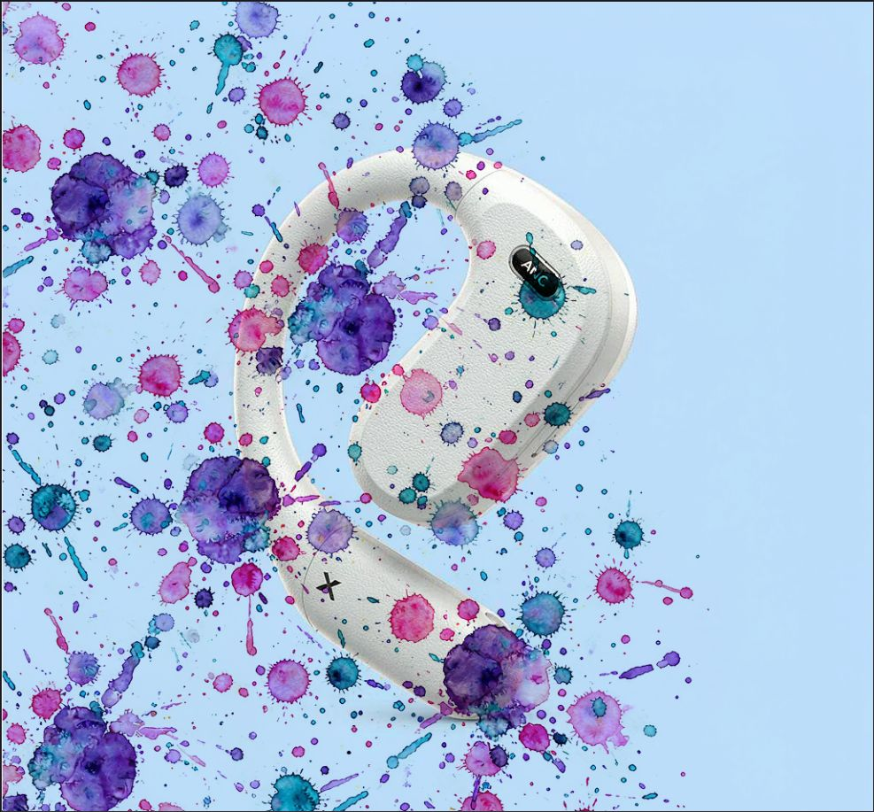
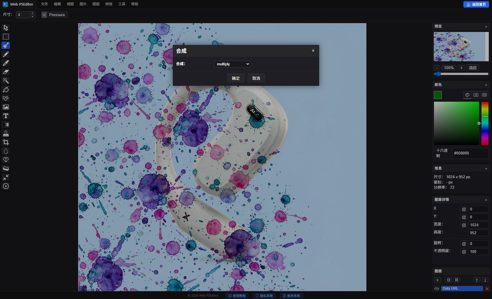

进阶实战：图层系统与混合模式（合成双重曝光）
解锁 专业修图软件 级图层魔法
打开 Web PSEditor 开启创作 →
纯网页端完整支持独立图层顺序、不透明度与混合模式。
专业图片编辑与普通简易画图工具的核心区别，就在于图层（Layers）系统。在 Web PSEditor 中，每一个文字、贴图、背景都可以是独立的图层，随时可以上下拖动排序、调节半透明度，或通过混合模式产生艺术级视觉效果。


第一步：堆叠两个图层
打开底图后，把第二张图片（纹理、光斑、线稿等）直接拖入画布 —— 它会自动作为新图层置顶。右侧图层面板可以清楚看到两层结构。
第二步：打开混合模式（合成）对话框
选中顶层纹理图层，点击顶部菜单 【图层 (Layer)】 -> 【合成 (Composition)】，弹窗内就是完整的混合模式下拉列表，选中的同时画布会实时预览效果。

第三步：选择模式并确认
选 正片叠底（multiply） 过滤白色、滤色（screen） 过滤黑色，或 叠加（overlay） 增强对比，点击确定提交。底层像素完全不受破坏，随时可以换模式重试。
最值得掌握的五个混合模式
| 模式 | 效果原理 | 经典用途 |
|---|---|---|
| 正片叠底 Multiply | 过滤纯白、保留暗部 | 白底签名、线稿、草图免抠图融入背景 |
| 滤色 Screen | 过滤纯黑、保留亮部 | 黑底星光、光斑、烟雾、火焰素材合成 |
| 叠加 Overlay | 增强对比、光影混合 | 电影感纹理、复古纸张、浓烈色调 |
| 柔光 Soft Light | 叠加的柔和版 | 轻量复古色调、不伤皮肤的质感叠加 |
| 差值/排除 Difference / Exclusion | 重叠区域反色 | 迷幻海报、两张照片对位校准 |
⚠️ 常见错误提醒
- 选错图层就调模式 —— 混合模式只作用于当前选中的图层，打开合成对话框前先确认右侧面板中高亮的是目标图层。
- 效果太浓却只会换模式 —— 正片叠底过重时，直接下调图层不透明度（Opacity）到 60~80% 更细腻。
- 过早合并图层 —— 合并后混合模式会被"焊死"。导出成图前请保持图层独立。
- 用 JPG 素材做叠加 —— JPG 压缩在黑白交界处的光晕叠加后会显形，叠加素材请优先用 PNG。
常见问题 FAQ
Web PSEditor 的混合模式在哪里设置？
选中图层后，点击顶部菜单 【图层】 -> 【合成】，下拉列表包含正片叠底、滤色、叠加等全部画布混合模式。
选了正片叠底后纹理怎么"消失"了？
正片叠底只保留较暗像素。浅色背景上的浅色纹理叠上去几乎所剩无几 —— 深色背景改用滤色，想均衡对比请用叠加。
之后还能随时关闭或更换效果吗？
可以。混合模式是非破坏性的，随时重新打开【图层】->【合成】更换，或点图层前的眼睛图标隐藏，即可对比前后效果。
混合模式能和滤镜叠加使用吗？
可以，而且配合极佳：给渐变颜色层用叠加模式，再给底层照片加滤镜，两者都是非破坏性叠加。
图层合成会把图片上传到服务器吗？
不会。图层合成 100% 在浏览器内完成，任何数据都不会离开你的设备。
相关教程推荐
🎯
动手实操练习
纯本地运算
无需安装软件，立即在浏览器中应用本篇所学技巧，纯本地处理无隐私泄露风险。